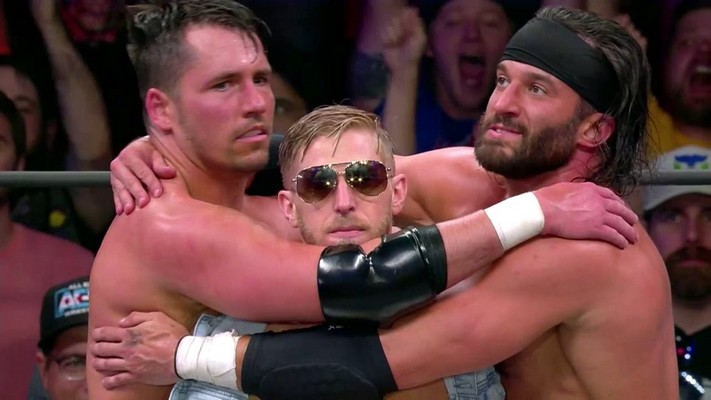

About Orange Cassidy
Orange Cassidy is Awesome. He is the King of "Sloth" style and most of the time doesnt even try and still wins. He is part of the group "Best Friends" where he and his best friends team up to beat other wrestling teams. His finisher move is called the "Orange Punch" and the "Code Red".
Orange Cassidy and the Best Friends
Casidys Abilities
- Has devastating kicks
- Puts his hands in his pockets
- Is deadly when he trys
Chaos
Orange is part of another group known as Chaos. I don't know much about Chaos but I think its some NJPW thing so if it is then thats kindof cool and they did bring someone new in so I liked that. Click the links below for some stuff